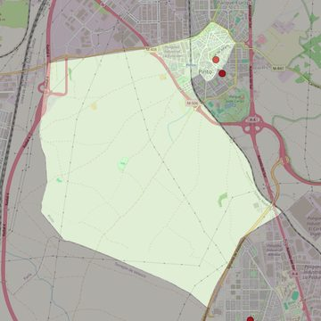

Santo Domingo de Silos
- Arciprestazgo
- Valdemoro
- Población
- Pinto
- Dirección postal
- Pza. Egido de la Fuente s/n
- Código postal
- 28320
- Extensión
- 16,41 km² (1.641 ha)
- Teléfono
- 916 911 214
- Correo electrónico
- santodomingodesilos-pinto@diocesisgetafe.es
- Información demográfica
- De la parroquia · De la población (Pinto) · Del arciprestazgo (Valdemoro)


Descargar mapaLímites según decreto
“Partiendo de la plaza donde confluyen las calles Las Alpujarras, Cataluña y San Juan, arrancan por el eje de la calle San Juan (en dirección suroeste); siguen por el eje de las calles Infanta Isabel (en dirección suroeste), San Martín (en dirección noroeste), Avenida de España (en dirección suroeste), Pedro Faura (en dirección noroeste), Torrejón (en dirección suroeste), por el eje de las vías del ferrocarril Madrid-Alicante (en dirección sureste), por los límites de los términos municipales de Pinto-Valdemoro (en dirección sureste), Pinto-Torrejón de Velasco (en dirección noroeste), Pinto-Parla (en dirección norte), por el eje de la carretera Pinto-Parla (M-408, dirección noreste), por el eje del Paseo de las Artes (dirección noreste), por el eje de la calle Cataluña (en dirección sureste) hasta la plaza donde confluyen las calles Las Alpujarras, Cataluña y San Juan, punto de partida”. (B.O: Abril 2007, pág. 457)